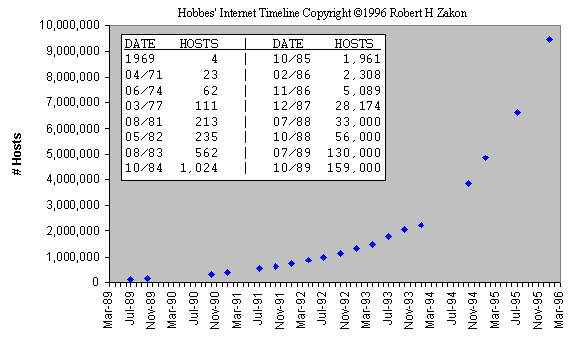

The Internet
History & Structure of the Internet Assignment 2005
Where did the Internet come From
The Internet as we know it today is an electronic network of computers that includes nearly every university, government, and research facility in the world. Also included are many commercial sites. It started with four interconnected computers in 1969 and was known as ARPAnet which was developed by the Advanced Research Projects Agency or ARPA a U.S Military agency. President Eisenhower requested funds in the airforce appropriations bill because of the treat of nuclear warfare and the fear that a well placed strike would completely destroy the Military's Strategy computer system which up until then had consisted of a few big computers in the same location.
ARPA's main agenda was the decentralization of the Military's strategy computer system they did this by building several smaller computers all connected together so that if one machine was destroyed the system would still function. This got the ball rolling, and the concept of different computers at different locations sharing information over a network soon became a fast growing reality thanks to technology developed by professor Len Kleinrock namely Packet Switching (where information is divided into packets before sending, each packet is sent individually and is then recompiled into the original message when it reaches it destination) this was the technology used for two computers to talk to each other in the first network experiment in 1965 at MIT directed by Larry Roberts and is the underpinning for the way we send information over the Internet today.
Initially the ARPAnet system was for Military use only but the realization of the educational benefits this new communications system had led to systems being installed in university's all over the U.S. The first E-mail programs called SNDMSG and READMAIL where developed by Ray Tomlinson at BBN for ARPAnet in 1972 and by 1973 the first international connections the the network where set up University College London and NORSAR in Norway.
As the volume of information being sent over the network grew there became a need for a set of rules which define how information would be sent over the network these were developed by Vint Cerf and Bob kahn in 1974 originally TCP (Transmission Control Protocol) which would later be split in 1978 into TCP/IP (Internet Protocol) . IP is responsible for the information being sent from server to server based on a destination address the IP number which every computer must have to be able to to send information over the network while TCP is used to make sure the correct information reaches it destination it can detect errors in the data and will resend until the data is correctly received.
Now the infrastructure was in place ARPAnet which would later become the INTERNET was a fully functional network system of computers communicating with each other via telephone lines. Still relatively new by 1977 there where 111 host on the network due to the fact that the public at large where not aware of this communications revolution and the cost of setting up a system would have only been manageable if your where a multi millionaire an issue that was addressed by the launch of IBM's first personal computer in 1981 which again was only attainable by very wealthy people in contrast to today where you can purchase a basic system for as little as € 300. Below is a chart marking the rapid growth of Internet host directally linked to personal computers becoming more affordable in the early 90's. In 1993 the amount of hosts grew by 341,000 percent. There are nearly 1 billion users now in 2005.

The
Internet was further enriched by the
arrival of a program called “Enquire Within” in 1980 (the
predecessor to the World Wide Web) written by Tim Berners-Lee. People
often mistakenly think the Internet and the Web are one and the same
which is not the case. The Internet is this this massive network of
networks connecting computers together globally the information that
travels over the Internet does so in
various languages know as protocols, the Web is an information
sharing program that is built on top of the Internet and uses only
one of the languages spoken on the Internet
to transmit data HTTP (hyper text markup protocol) the web also
utilizes browsers such as Internet
explorer or mozilla firefox to find information or you can simply
type the URL (Uniform Resource Locator)
into the browser to find a specific page
you are looking for. This is made possible by the Domain Name System
DNS designed in 1983 which converts alphabetical URL's into the
proper IP address which are numerical.
Although the internets origins are in the U.S. No one can actually claim ownership of it but there are some orginisations who oversee it continued development such as IETF (Internet engineering task force) who are a large international community of network designers, operators, vendors, and researchers concerned with the evolution of the Internet and the smooth operation and ICANN The Internet Corporation for Assigned Names and Numbers who as the name suggest are responsible for assigning domain names and IP addresses.
The Internet has grown massively in the the last 15 years and is set to keep growing with new technological advances being made globally every day.
Bibliography
Below are a list of Websites i found helpful while researching this assignment.
http://www.cisco.com/univercd/cc/td/doc/cisintwk/ito_doc/ip.htm
http://www.webopedia.com/DidYouKnow/Internet/2002/WhoOwnstheInternet.asp
http://www.webopedia.com/DidYouKnow/Internet/2002/Web_vs_Internet.asp
http://www.comp.leeds.ac.uk/summer/materials/internet_where.html
Derek Harvey.